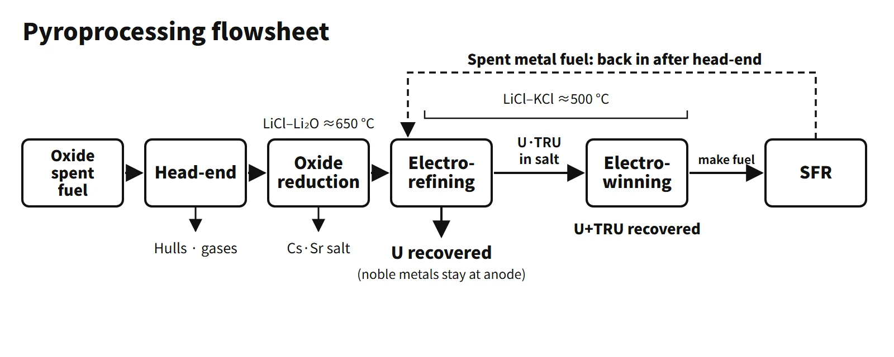

Waste, Fuel Cycle & Decommissioning · C-WD-006
Pyroprocessing — Dry Processing That Recovers Uranium and Transuranics Together by Molten-Salt Electrochemistry
Electrolytic reduction, electrorefining and electrowinning in molten salt at 500–650 °C recover U and a U/TRU mixture, intended to be burned in a sodium-cooled fast reactor.
Pyroprocessing is a technology that treats spent nuclear fuel electrochemically in molten salts (LiCl–Li₂O, LiCl–KCl) at 500–650 °C. It recovers uranium (U) and the transuranic elements (TRU) as groups, and divides the fission products into salt and metal waste streams according to their chemistry. In contrast with aqueous reprocessing (PUREX), which uses water and organic solvents, it is also called "dry reprocessing".
A good first line for an exam answer is: "A dry process that treats spent fuel in a high-temperature molten-salt medium by electrolytic reduction, electrorefining and electrowinning to recover U and a U/TRU mixture, aimed at reducing high-level waste in combination with a sodium-cooled fast reactor (SFR)."
Principle and mechanism
Process flow — five steps
Argonne National Laboratory (ANL) developed the process for metallic fuel in the Integral Fast Reactor (IFR) program and applied it to the treatment of EBR-II spent fuel. Light-water reactor fuel is an oxide (UO₂), so the Korea Atomic Energy Research Institute (KAERI) added an electrolytic reduction step at the front to convert it to metal.
- Head-end: the fuel is disassembled, cut and decladded. High-temperature oxidation in air at about 500 °C (voloxidation) turns UO₂ into U₃O₈ powder, and volatile nuclides such as H-3, C-14, Kr, Xe and I are captured in the off-gas treatment system. Release fractions vary with conditions.
- Electrolytic (oxide) reduction: in LiCl–Li₂O (about 1 wt%) molten salt at about 650 °C, the oxide is reduced to metal. The representative cathode reaction for UO₂ is UO₂ + 4e⁻ → U + 2O²⁻, and oxygen is evolved at the anode. Salt adhering to the reduced product is removed before the next step. Cs, Sr and Ba dissolve into the salt.
- Electrorefining: in LiCl–KCl eutectic salt at about 500 °C, the reduced metal is placed in an anode basket and dissolved. Only U deposits selectively on the solid (steel) cathode; under representative conditions the noble metals remain at the anode and become metal waste.
- Electrowinning: from the salt in which U and TRU have accumulated after refining, a liquid cadmium cathode (LCC) recovers U and TRU (Np, Pu, Am, Cm) together. The anode is an inert carbon anode; chlorine is evolved and recovered. Some rare earths (RE) come along.
- Residual actinide recovery, salt regeneration and solidification: the LiCl-based and LiCl–KCl salts are purified separately for reuse; Cs, Sr and RE wastes are made into ceramic waste forms, and cladding hulls and anode residues into metal waste forms.
![Pyroprocessing flowsheet under a scene of an argon-atmosphere shielded cell: 1 head-end with decladding and voloxidation at about 500 °C in air (3UO₂ + O₂ to U₃O₈), producing cladding hulls and volatile nuclides; 2 oxide reduction in LiCl–Li₂O at about 650 °C (UO₂ + 4e⁻ to U + 2O²⁻), sending Cs, Sr and Ba to salt treatment; 3 electrorefining in LiCl–KCl eutectic at about 500 °C with U recovered on a solid cathode and noble metals and Zr left at the anode; 4 electrowinning with a liquid Cd cathode recovering U and TRU together; the U/TRU product with some RE goes to SFR metal fuel (U-TRU-Zr), and spent metal fuel returns to step 3 after head-end without oxide reduction; 5 per-salt-system actinide recovery, salt regeneration and ceramic and metal waste forms](../../assets/images/concepts/c-wd-006-pyroprocessing/fig1-pyroprocess-flowsheet.webp)
Why the elements separate — chloride stability
The basic tendency of the separation is set by the free energy of chloride formation (−ΔG°, kcal/g-equivalent, 500 °C). The values from Table 2.1 of the US National Research Council (NRC, 2000) report (ANL data) are:
- Stay in the salt: CsCl 87.8, SrCl₂ 84.7, LaCl₃ 70.2, NdCl₃ 67.9
- Can be electrotransported: CmCl₃ 64.0, PuCl₃ 62.4, AmCl₃ 62.1, NpCl₃ 58.1, UCl₃ 55.2, ZrCl₄ 46.6
- Stay as metal: MoCl₄ 16.8, TcCl₄ 11.0, RuCl₄ 6.0
Among U and the TRU, UCl₃ is the least stable, so with potential control U deposits selectively on the solid cathode. ZrCl₄ is even less stable, but under operating conditions that suppress Zr dissolution it stays at the anode. The activity of TRU in liquid cadmium is greatly lowered, so TRU deposit together with U. Selectivity between TRU and RE is limited, so some RE ends up in the product. Actual partitioning also depends on electrode potential, activity, cathode material and operating conditions.
![Left: horizontal bar chart of the free energy of chloride formation at 500 °C in kcal per gram-equivalent, grouped as staying in salt (CsCl 87.8, SrCl₂ 84.7, LiCl 82.5 as solvent, LaCl₃ 70.2, NdCl₃ 67.9), electrotransportable (CmCl₃ 64.0, PuCl₃ 62.4, AmCl₃ 62.1, NpCl₃ 58.1, UCl₃ 55.2, ZrCl₄ 46.6) and staying as metal (MoCl₄ 16.8, TcCl₄ 11.0, RuCl₄ 6.0), with notes that UCl₃ is the least stable of U and TRU, that low TRU activity in cadmium lets TRU co-deposit with U, and that limited TRU/RE selectivity brings some RE along. Right: cross-sections of an electrorefiner with an anode basket and a solid cathode collecting U dendrites, and an electrowinning cell with a carbon anode evolving chlorine and a liquid cadmium cathode, both in LiCl–KCl at about 500 °C](../../assets/images/concepts/c-wd-006-pyroprocessing/fig2-chloride-stability.webp)
What it means in a plant — the SFR link and the waste-reduction claim
Pyroprocessing is only separation; it does not destroy TRU. The U/TRU mixture has to be made into U-TRU-Zr metallic fuel and burned in an SFR, because the fraction of TRU that fissions is high in a fast neutron spectrum. Spent SFR metallic fuel returns to electrorefining without electrolytic reduction, closing a multi-recycle loop.
Repository area is governed by decay heat. For the first few decades Cs-137 and Sr-90 are the main heat sources; in the long term Am-241 and Pu. The waste-reduction argument is that removing Cs and Sr for separate decay storage and transmuting the TRU reduces the disposal burden.
- Figures presented by KAERI and the government (assuming SFR multi-recycle): high-level waste disposal volume reduced to as little as about 1/20, repository area to as little as about 1/100, and the time for radiotoxicity to reach the natural-uranium level from about 300,000 years to about 300 years.
- Criticism: several high-level waste streams all require deep geological disposal, and the combined volume of the waste forms could exceed that of the original spent fuel (Bulletin of the Atomic Scientists article, 2017). Even in KAERI's own analysis, after about 300 years the U/TRU/RE products account for most of the decay heat and toxicity. The reduction holds only if the TRU are actually burned.
Proliferation resistance — two views
| View | Arguments |
|---|---|
| Resistance is high (KAERI and others) | No separate Pu product (U/TRU/RE mixture); the product is more radioactive and hotter than PUREX Pu; remote operation in shielded cells; safeguards built in at the design stage |
| The benefit is limited | A joint study by US national laboratories (Bari et al., 2009) judged the risk reduction relative to PUREX to be modest and relevant mainly to non-state actors; a state diverting material could purify it further; the product's radiation is far lower than that of spent fuel, so self-protection is weak |
The IAEA treats any processing facility as subject to safeguards, regardless of the technology. A particular challenge is that nuclear material is dispersed and held up in the molten-salt and metal phases, which makes accountancy difficult. Proliferation resistance is a concept that evaluates intrinsic features together with extrinsic measures (safeguards, physical protection) (IAEA INPRO and GIF PR&PP methodologies). In an answer it is safest to present both views.
Status in South Korea
- KAERI research facilities: ACPF carried out laboratory-scale electrolytic reduction tests with spent fuel. PRIDE is a non-radioactive integrated process test facility using depleted uranium and surrogate materials; it has a large argon cell and began commissioning in 2012.
- ROK–US Joint Fuel Cycle Study (JFCS): over ten years from 2011, in three phases, it assessed technical feasibility, economics and nonproliferation acceptability. KAERI, INL and ANL took part, and the IAEA joined the safeguards working group from 2013. The final report was approved in September 2021, but its details are not public.
- 2015 ROK–US nuclear cooperation agreement: entered into force on 25 November 2015 for 20 years. Post-irradiation examination and electrolytic reduction received long-term consent. Steps from electrorefining onward remain subject to consultation in the High-Level Bilateral Commission.
- Recent developments: the ROK–US joint fact sheet of November 2025 included language "supporting the process that will lead to civil uranium enrichment and spent fuel reprocessing", and follow-up consultations are under way.
Regulatory basis
- Korea's Nuclear Safety Act: a spent-fuel processing facility is a nuclear fuel cycle facility. An amendment promulgated in October 2024 (Act No. 20533) unified processing business, previously "designated by the competent minister", into the NSSC construction and operating licence system.
- ROK–US nuclear cooperation agreement (2015): US consent for reprocessing and alteration in form or content. The US Nuclear Non-Proliferation Act (NNPA, 1978) requires US consent for reprocessing by partner countries.
- IAEA: comprehensive safeguards (INFCIRC/153), Additional Protocol (INFCIRC/540), safety of nuclear fuel cycle facilities SSR-4 (2017).
- Policy: the Joint Declaration on the Denuclearization of the Korean Peninsula (1992): "shall not possess nuclear reprocessing and uranium enrichment facilities".
- Since the questions were set: the 78th exam (2006) fell in the GNEP period, when UREX+ was under development. The 2010 question predates the agreement revision, the 2017 question came while JFCS was in progress, and the 2022 question just after JFCS ended.
Easily confused pairs
| Item | PUREX (aqueous) | UREX+ (aqueous variant) | Pyroprocessing (dry) |
|---|---|---|---|
| Medium | Nitric acid + 30 % TBP solvent extraction | Nitric acid + TBP, with AHA suppressing Pu and Np extraction → extract U only, then separate Tc, Cs/Sr and TRU | Molten salt, electrochemistry |
| Products | Pure U, pure Pu | U, TRU group (by variant) | U, U/TRU mixture |
| Maturity | Commercial (La Hague and others) | Laboratory scale | Engineering-scale demonstration |
| Link | LWR MOX | Fast and transmutation reactors | SFR metallic fuel |
| Proliferation view | Pure Pu is the main issue | Designed not to separate Pu alone | Pu not separated alone; degree of benefit disputed |
| Weakness | Large volumes of liquid waste | Complex process | Recovery and purity, salt waste, accountancy |
Do not assert that pyroprocessing "is not reprocessing": the US government regards it as a form of reprocessing.
Key points at a glance
- Definition: dry processing that treats spent fuel electrochemically in high-temperature molten salt and recovers U and U/TRU as groups.
- Process: head-end (decladding, voloxidation) → electrolytic reduction (LiCl–Li₂O, about 650 °C) → electrorefining (LiCl–KCl, about 500 °C, U on a solid cathode) → electrowinning (liquid Cd cathode, U + TRU) → salt regeneration and solidification.
- Principle: differences in chloride formation free energy — most Cs, Sr and RE stay in the salt, noble metals at the anode, U on the solid cathode, U + TRU in the liquid Cd cathode.
- Advantages: no separate Pu; no water or organic solvent, so radiation resistance is high and criticality constraints are eased; small modular units; directly linked to SFR metallic fuel.
- Waste: with SFR multi-recycle, claimed reductions in repository area and in the duration of radiotoxicity (scenario-dependent).
- Challenges: recovery and purity, salt waste treatment, nuclear material accountancy, economics, consent under the ROK–US agreement.
- South Korea: KAERI PRIDE (non-radioactive), JFCS (2011–2021), long-term consent for electrolytic reduction under the 2015 agreement.

This is a model answer, not an official solution. It reflects the criteria current as of 2026.
Exam relevance
Pyroprocessing has appeared four times in the Korean Professional Engineer (Nuclear Power) exam: 78th exam, session 4, Q5 (proliferation resistance of PUREX, UREX+ and dry processing); 2010 exam, session 1, Q4 (nuclear reprocessing, "Pyro-Processing"); 2017 exam, session 1, Q11 (pyroprocessing); and 2022 exam, session 1, Q11 (features of pyroprocessing, including its advantages). The three recent items are short-answer questions asking for the definition, process steps and advantages; the older item asks for a comparison of proliferation resistance across processes.
Write "dry reprocessing (pyroprocessing)" rather than claiming it is not reprocessing, state that the waste-reduction figures assume SFR burning, give both views on proliferation resistance, and remember that PRIDE uses no spent fuel.